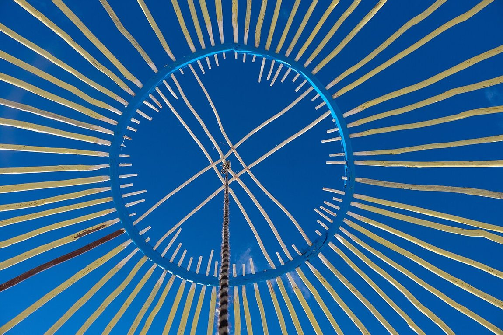
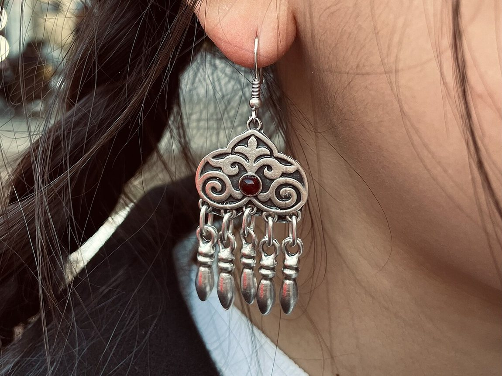
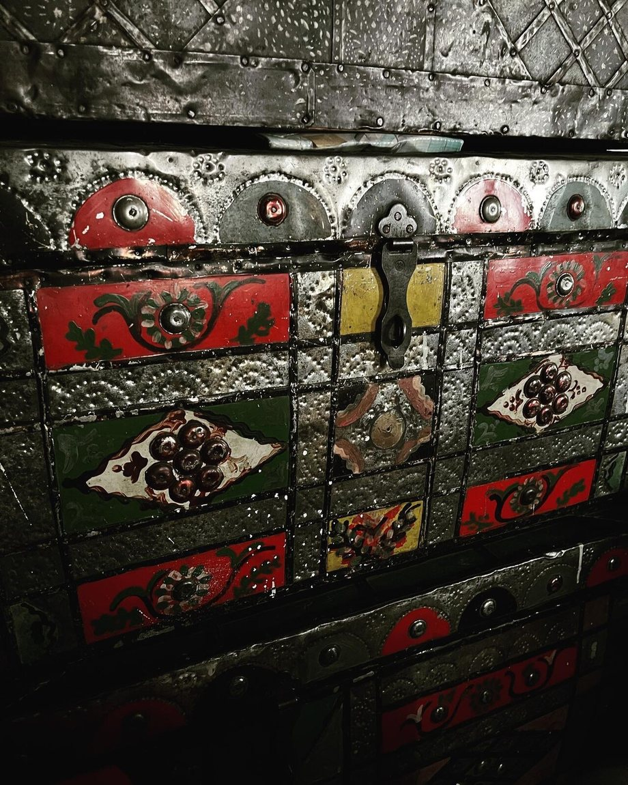
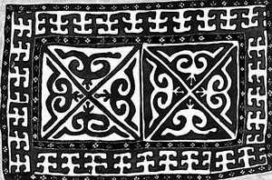

Көркем еңбек · 2-бөлім · Сәндік-қолданбалы өнер Art & Craft · Section 2 · Decorative & Applied Art Художественный труд · Раздел 2 · Декоративно-прикладное искусство
🐏 Қазақ ұлттық ою-өрнегі: түрлері мен мағынасы
🐏 Kazakh National Ornament: Types & Symbolism
🐏 Казахский орнамент: виды и символика
Ою-өрнек — әріпсіз жазылған дала тілі: әр өрнектің өз мағынасы бар. Ornament is the steppe's language without letters: every motif has a meaning. Орнамент — язык степи без букв: у каждого узора есть значение.
Ою-өрнек — қазақ халқының ежелгі сәндік өнері әрі рәміздік тілі. Ол жай әшекей емес: әр өрнек белгілі бір мағына береді — байлық, ұрпақ жалғасы, тілек, қорған. Көшпелі ата-бабамыз табиғаттан көрген бейнелерді (мүйіз, гүл, су, күн) өрнекке айналдырып, ұрпақтан ұрпаққа жеткізген. Oyu-ornek is the ancient decorative art and symbolic language of the Kazakh people. It is more than decoration: each motif carries a meaning — wealth, continuation of the family, a wish, protection. Our nomadic ancestors turned images they saw in nature (horns, flowers, water, the sun) into patterns and passed them down through generations. Ою-өрнек — древнее декоративное искусство и символический язык казахского народа. Это не просто украшение: каждый узор несёт значение — достаток, продолжение рода, пожелание, оберег. Кочевые предки превращали увиденные в природе образы (рога, цветы, воду, солнце) в узоры и передавали их из поколения в поколение.
Ою — қағаздан қиып, қаттап жасалатын симметриялы өрнек; өрнек — кең мағынадағы кез келген нақыш. Екеуі бірге «ою-өрнек» деп аталады. "Oyu" is a symmetrical pattern made by folding and cutting; "ornek" is any decorative motif in a broad sense. Together they are called "oyu-ornek". «Ою» — симметричный узор, вырезанный из сложенной бумаги; «өрнек» — любой узор в широком смысле. Вместе их называют «ою-өрнек».
Өрнек топтары The Four Groups of Ornament Четыре группы орнамента
🐏 ХайуанаттықZoomorphicЗооморфные
Жануарлар бейнесінен шыққан өрнектер. Күш, байлық пен ұрпақ жалғасын білдіреді.Motifs from animal forms. They mean strength, wealth and continuation of the family.Узоры из образов животных. Означают силу, достаток и продолжение рода.
🌷 Өсімдік тектесPlantРастительные
Өсімдіктен алынған өрнектер. Өмір, табиғат пен өсіп-өркендеуді бейнелейді.Motifs from plants. They depict life, nature and flourishing.Узоры из растений. Изображают жизнь, природу и процветание.
☀️ ҒарыштықCosmogonicКосмогонические
Аспан денелерінің өрнегі. Мәңгілік, аспан мен дүние тәртібін білдіреді.Motifs of celestial bodies. They mean eternity, the sky and cosmic order.Узоры небесных тел. Означают вечность, небо и миропорядок.
🔷 ГеометриялықGeometricГеометрические
Қарапайым пішіндер. Тәртіп, қозғалыс пен қорғанышты білдіреді.Simple shapes. They mean order, movement and protection.Простые формы. Означают порядок, движение и защиту.
Рәміздер сөздігі Dictionary of Symbols Словарь символов
Ең көп тараған өрнектер және олардың мағынасы. The most common motifs and what they mean. Самые распространённые узоры и их значения.
Байлық, молшылық, ұрпақ жалғасы. Ең көне әрі негізгі өрнек.Wealth, abundance, continuation of the family. The oldest, central motif.Достаток, изобилие, продолжение рода. Древнейший, главный узор.
Бостандық, бақыт, тәуелсіздік пен ұмтылыс.Freedom, happiness, independence and aspiration.Свобода, счастье, независимость и стремление.
Өмір, қозғалыс, тазалық пен молшылық.Life, movement, purity and abundance.Жизнь, движение, чистота и изобилие.
Өмір, жылу, мәңгілік пен жарық.Life, warmth, eternity and light.Жизнь, тепло, вечность и свет.
Жол, төзім, байлық пен берекет.The path, endurance, wealth and plenty.Путь, выносливость, достаток и благополучие.
Үй, отбасы, бірлік пен аспан. ҚР Елтаңбасында бейнеленген.Home, family, unity and the sky. It appears on Kazakhstan's coat of arms.Дом, семья, единство и небо. Изображён на гербе РК.
Ою-өрнек қайда кездеседі Where Ornament Lives Где живёт орнамент
🔍 Үлкейту үшін фотоны басыңыз. Барлығы — нақты бұйымдар. 🔍 Tap a photo to enlarge. All are real objects. 🔍 Нажмите на фото, чтобы увеличить. Это настоящие изделия.




💬 Қорытынды 💬 In a nutshell 💬 Главное
Орнамент — халықтың әріпсіз «жазуы»: онда табиғат, наным-сенім және жақсылық тілегі шифрланған. Ою-өрнекті оқи білу — ата-баба мәдениетін түсіну деген сөз. Ол қазір де ұлттық киімде, кілемде, ғимаратта және Қазақстан рәміздерінде өмір сүреді. Ornament is the people's "writing" without letters: nature, beliefs and wishes of goodness are encoded in it. To be able to read oyu-ornek means to understand the culture of one's ancestors. It still lives today in national dress, carpets, buildings and the state symbols of Kazakhstan. Орнамент — это «письмо» народа без букв: в нём зашифрованы природа, верования и пожелания добра. Уметь читать ою-өрнек — значит понимать культуру предков. Он и сегодня живёт в национальной одежде, коврах, архитектуре и в государственных символах Казахстана.